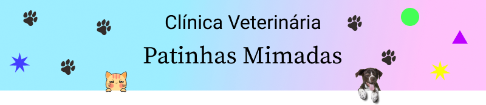

Na Clínica Veterinária Patinhas Mimadas, nossa missão é proporcionar cuidados de saúde excepcionais e compassivos para os seus queridos animais de estimação. Nosso compromisso é promover o bem-estar dos animais, oferecendo serviços veterinários de alta qualidade e tratamentos personalizados.
